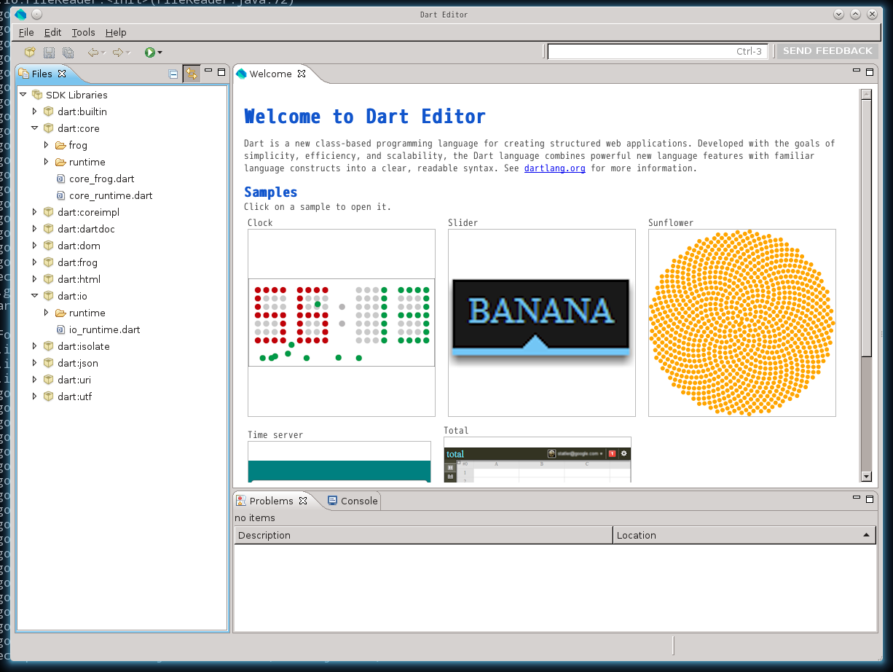
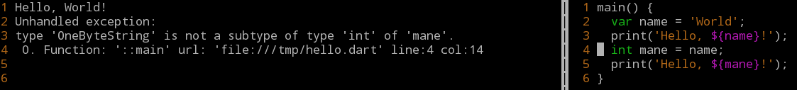
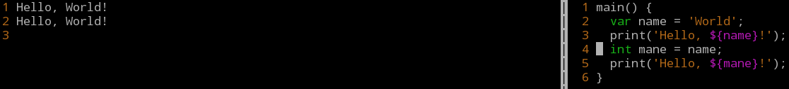

Dartことはじめ
Google Dart Hackathon 2012 Tokyo, Japan
http://usagi.github.com/intro-dart/
Note: この資料は2次元構成です。
- →: 次の§へ進む
- ←: 前の§へ戻る
- ↓: 現在の§を読み進む
- ↑: 現在の§を読み戻る
- ESC: 迷子になったらどうぞ
About Speaker
Who?

Usagi Ito
（茶道楽の人
）


Dartとの繋がり
- dartrefjp & facebook/DartJP コアメンバー
- 英語ドキュメントを邦訳したり
- 日本語の情報源を整理したり
- General Dart Discussion たまに出没・ｘ・
- 言語仕様にお節介焼いたり
- 日本語文化圏での活動を紹介したり
そんなこんなで今日はGoogle Dart Hackathon
でDart入門セッションや
tutorとして参加させて頂く事に。
And more...
お茶も好きだけど美味しい食べ物も大好きだよ！


よろしくお願いします
∪・ｘ・∪
あ、そうそう…
cpprefjpとかC++JPとかProgramming（中略）C++とかもよろしく☆（ゝω・）vｷｬﾋﾟ
Hackathonの為のDart入門
〜この資料のおしながき〜
§1 Dartの歴史と背景と現状
Dartの歴史
- 2011年10月 プログラミング言語Dart 公開（言語仕様 ver.0.01）
- （…中略…）
- 2011年11月 言語仕様 ver.0.06 公開
- 2012年 1月 言語仕様 ver.0.07 公開
- 2012年 2月 Dartを試験実装したウェブブラウザー Dartium 公開
- 2012年 4月 Dartium、Windowsへ対応 公開
- 2012年 3月 言語仕様 ver.0.08 公開 ← 現行仕様！
2011年5月12日現在も言語仕様ver.0.09の開発が進行中！
言語仕様の変化を追い掛けるには…？
↓
最新の言語仕様（English）には、最初のver.0.01から現行仕様に至るまでの全ての変更が冒頭に記述されている。
↓
C++の言語仕様書やPHPのオンラインリファレンスなどに比べたらチョット癖のある文書だし不足もあるけど、、、Java、C++、JavaScriptなどの言語使用経験があれば必要に応じて現行仕様を斜め読みに突っつきながらでも（たぶん）大丈夫！Happy Hacking!!
English シンドイネー…
↓
ちょっと古い（＆ちと訳出怪しいトコもある）けど、
株式会社クレスさんが邦訳版を公開しています
※dartrefjpでも最新言語仕様をコミュニティ版として邦訳したいのだけど…
（・ｘ・）
Dartの背景
JavaScript(ECMA-262) シンドイネー…
↓
ECMA-262の大規模な改訂はここ10年間程で何度か調整に失敗。現在はECMAScript 6th(Harmony)を2013年の策定を目処に…
↓
GoogleECMAScriptの改訂に掛けるより、新たにイケてるウェブスクリプティング言語作っちゃった方が良いんじゃないかしら…
↓
2011年10月 Dart誕生！
(開発中はDashと呼ばれていた)
Dartの現状
Dartの目標はJavaScriptの完全な置き換えだけど…
- 今年に入ってからは言語仕様は2ヶ月に一度のペースで更新される勢い
- まだまだ言語仕様の基礎的な部分もほろっと改訂されたりする
（例えば時期v0.09ではswitch文とbreakに大きな変更が組み込まれていたり） - Dart API（＝言語仕様で定める「標準ライブラリー的なもの＋ウェブスクリプティング言語としてのAPI」）もまだまだ不足気味
- Dart VMの実行速度はJavaScript(V8)に比べてまだまだ遅い
（速くしたいらしいけど、まだ速度面での最適化にはあまり取り組めていないみたい…） - Dart→JavaScriptコンパイラー`frogc`（後述）が生成するコードがマッチョ
（SDKの更新ごとに縮んではいるけど…）
↓
まだまだこれから！
まだまだこれから！
- ソースコードの保守性はJavaScriptより高いコードを書き易い！
- 学習コストが低く取っ付きやすく柔軟で構造化に適した言語仕様！
- JavaScript/V8にはまだ届かないけど、P(ryとかR(ryに比べたら速い！
- NaCl、あるいはJava AppletやFlashの様なプラグイン要らず！
今日はそんなDartで
ゆっくり楽しんでいってね！
§2 "プログラミング言語Dart"
§2.1 言語基礎
Dart言語仕様の特徴
- C系の文法に近い
（C, C++, Java, C#, ECMAScript, …などの経験者だとすぐに書けるかも） - プログラムの実行はエントリーポイントから
（main関数） - クラスベースのオブジェクト指向
（クラス, インターフェース, 派生） - 静的型付け「にも」対応
（註: §A.1） - プロセスはシングルスレッド、
アクターモデルライクな軽量スレッドあり
（→ dart:isolate; dartrefjp訳版, 言語仕様書 Concurrency/Class/Spawn等も参考に）
hello,world!
main() {
String name = 'World';
print('Hello, ${name}!\nYesterday is ${new Date.now().day - 1}');
}
Hello, World!
Yesterday is 11
- 文字列リテラルはECMAScriptライク
- シェルスクリプトライクな文法の「内挿」に対応
- 「式」を内挿可能
FizzBuzz
main() {
for (int n = 1; n < 100; ++n) {
String say = '';
bool fizz = n % 3 === 0;
bool buzz = n % 5 === 0;
if (fizz)
say += 'Fizz';
if (buzz)
say += 'Buzz';
else if (!fizz)
say = n.toString();
print(say);
}
}
1
2
Fizz
4
Buzz
Fizz
7
8
Fizz
Buzz
11
Fizz
13
14
FizzBuzz
型と変数
for (int n = 0; n < 100; ++n) { // <-- `int`
String result; // <-- `String`
bool fizz = n % 3 === 0; // <-- `bool`
bool buzz = n % 5 === 0; // <-- `bool`
- bool / int / double / num
- String / List / Set / Queue / Map / ...
- 静的推論型は`var`で使用可能（C++11のauto的なもの）
- `final`修飾で定数宣言（C++のconst変数宣言的なもの）
※Dartではconstは別に意味があるので注意 - リスト（配列的なソレ）リテラルは`[0,1,2]`
組み込み型の基礎については
dartrefjp/Dart言語ツアー/組み込み型
もどうぞ！
制御文
for (var n = 0; n < 100; ++n) { // <-- `for`
if (n_is_fizz) // <-- `if`
result += 'Fizz';
if (n_is_buzz) // <-- `if`
result += 'Buzz';
else if (n_is_fizz) // <-- `else if`
result = n;
- for / for-in / while / do-while
- switch-case-break / if-else / ?:
- break / continue
- try-throw-catch
- C++やJavaやJavaScriptの構文ほぼそのまま！
演算子
- + - * / % += -= ...
- == != === !== ...
- C++やJavaやJavaScriptにありそうな演算子は揃っている
組み込み型の基礎については
dartrefjp/Dart言語ツアー/演算子
もどうぞ！
関数とラムダ式
void print2(var v) { print(v * 2); }
main() {
var vs = [1, 7, 3, 2, 0, 5, 0, 4];
print('--1--');
vs.forEach(print);
print('--2--');
vs.forEach(print2);
print('--3--');
vs.forEach( (a) => print(a*a) );
}
関数とラムダ式の基礎については
dartrefjp/Dart言語ツアー/関数
もどうぞ！
クラス、継承、インターフェース
interface i1 { num m1(); }
interface i2 extends i1 { num m2(); }
interface ix { num mx(); }
class c1 implements i1 { num m1() => 1; }
class c2 extends c1 implements i2 { num m2() => 2; }
class c3 extends c2 implements ix { num mx() => 3; }
main() {
print('--1--');
var one = new c1();
print(one.m1());
print('--2--');
var two = new c2();
print(two.m1());
print(two.m2());
print('--3--');
var three = new c3();
print(three.m1());
print(three.m2());
print(three.mx());
}
※クラスの多重継承はできない。
ジェネリクス
class c<T extends double> {
T m(T t) => t * t;
}
main() {
var i = new c();
print( i.m(1.41421356) );
}
- C++やJavaライクな文法でにジェネリッククラスを使用可能
- extendsで型制約を付ける事もできる
and more ... ?
- Dynamic型
- ファクトリーなctor
- newに対応するconst
- Isolateと並行プログラミング
- etc.
やや複雑な言語機能は実際にコードを
動かして慣れてからでも大丈夫・ｘ・ｂ
§2.2 API
API
dart:core (dart:coreimpl) / dart:isolate
html / io / json / uri / utf
註: dom (deprecated) → html（※参考リンク）
ちょっと寂しい様な…？
↓
dart:coreの中に、
Math、Date / Duration / Stopwatch、RegExp、HashMap<K,V> / Set<E> / List<E> / Queue<E> ...
…などなど、まだまだ少ないながら基本的なプログラミングパーツは盛り込まれつつある
∪・ｘ・∪
不足は今日Hackするといいよ！
( ･`д･´)
APIリファレンスの日本語って…
⇣
dartrefjp/API リファレンスで頑張ってるよ！
（協力者随時募集中！）
ex.1) Math
モンテカルロでπでも推定しようか
Math.randomで疑似乱数、Math.sqrtで2乗根を求めるよ！
main() {
final int n_max = 100 * 1000;
var in_count = 0;
var print_pi = (n) => 4.0 * in_count / n;
for(var n = 0; n < n_max; ++n){
var x = Math.random();
var y = Math.random();
var d = Math.sqrt(x*x+y*y);
if(d <= 1.0)
++in_count;
if(n % 500 === 0)
print('${n}-th result: ${print_pi(n)}');
}
print('${n_max}-th(final) result: ${print_pi(n_max)}');
}
※Dart APIの疑似乱数生成エンジン Math.random は、
品質が悪く、先月末から改善に取り組み始めたみたい。
ゲームやシミュレーションでは気を付けて！
（Dartには固定精度整数やreinterpret_castは無いので
ユーザーコードで機能的かつ高速な疑似乱数生成エンジンを実装する事は難しい）
§3 Dartの処理系と開発環境
§3.1 Dartboard
http://try.dartlang.org/
- ウェブブラウザーでDartできるオンラインサービス
- URLによるコードの保存機能アリ
- この資料からのリンクでもお馴染み！
（※正しくは"処理系"ではなくDart専用のideone.com的なソレ）
§3.2 Dartium
Dartium
- HTMLの`<script>`タグで
`src=hoge.dart`できるブラウザー - ↓はこちらのサンプルより
<!-- Copyright (c) 2011, the Dart project authors.Please see the AUTHORS file
for details. All rights reserved. Use of this source code is governed by a
BSD-style license that can be found in the LICENSE file. -->
<html>
<head>
<title>Hi Dart</title>
</head>
<body>
<h2 id="status">dart is not running</h2>
<script type="application/dart" src="hi.dart"></script>
<script src="http://dart.googlecode.com/svn/branches/bleeding_edge/dart/client/dart.js"></script>
</body>
</html>
動作画像とぷち解説等はDart -ing/Dartium を使ってみる など参考になります・ｗ・ｂ
（後述の）Dart Editorを使うとDartiumで実行可能なHTML/DART/JSの雛形などもあり便利ですよ！
§3.3 Dart SDK
Dart SDK
`dart`
- コマンドラインツールのDart処理系（Dart VM）
- （後述の）Dart Editorのバックエンドでもある
% cat hello.dart
main() {
var name = 'World';
print('Hello, ${name}!');
}
% dart hello.dart
Hello, World!
`frogc`
- コマンドラインツールの.dart→.jsコンパイラー
- （後述の）Dart Editorのバックエンドでもある
% cat hello.dart
main() {
var name = 'World';
print('Hello, ${name}!');
}
% frogc hello.dart
% ls hello.dart*
-rw-r--r-- 1 usagi users 67 5月 11 06:27 hello.dart
-rw-r--r-- 1 usagi users 15K 5月 11 06:27 hello.dart.js
% cat hello.dart.js
% d8 hello.dart.js
Hello, World!
実装が気になる…
⇣
っ【ソース】
（Google Project）
Dart SDKを使いたい！
入手について日本語化してあるのでどうぞ！
(・∀・)ｂ
⇣
dartrefjp/Dart SDK
（元の公式Englishページはこちら）
⇣
もっとグラフィカルな開発環境を使いたいです＞＜
⇣
（後述の）Dart Editorをどうぞ！
あ、そうそう…もしArch Linuxをお使いなら！
⇣
AURのパッケージをどうぞ！
§3.4 Dart Editor
Dart Editor
- EclipseをベースにDartに特殊化したIDE！
- 動作はEclipseより軽やか！
- コード補間とかできます！
- 学習に便利なサンプルも同梱！
- （前述の）Dartiumも同梱！
- （前述の）Dart SDKも同梱！

Dart Editor（の配布パッケージ）
＝ IDE ＋ SDK ＋ Dartium ＋ Sample
これさえ手に入れれば開発環境準備完了！
↓
日本語ないの…？
↓
アリますよ！
↓
dartrefjp/チュートリアル: Dart Editor
※MacOSXもWindowsもほぼ同じなので"for Linux"しか邦訳していない点はご容赦下さい・ｘ・；
ステップ２からのチュートリアルが肝心です！
§A Tips & おまけ
§A.1 Tips; checked mode / production mode
checked mode / production mode
- Dartには2つの実行モードが言語仕様で定義されている
- 1. checked mode
- 2. production mode
checked mode
- 静的型付けが有効化され実行時に型エラーが報告されるモード m9( ﾟдﾟ)
- 開発中は基本的にchecked modeを使うべし
- ※実効速度は著しく低下する

production mode
- 静的型付けが全てスルーされるモード (；´Д｀)
（全て動的型付けだった事にして動作） - 最終的な配置や実効速度の評価時にのみ使うべし
- ※checkedに比べたら桁違いに速い

開発中はchecked mode！
↓
配置時はproduction modeへ
※Dartboardでもcheckedは使えるし、モード選択はURLにも保存される
§A.2 Tips; Dartの関連情報源
www.dartlang.org
- 公式サイト（English）
- Dartに関する一次情報の発信源！
- SDK等のダウンロード！
- 開発者向けのお役立ち情報もたくさん！
- Downloads / Getting Started / Language & Libraries / Tools / Resources
Google Project/dart
Google Groups/General Dart Discussion
- Dartに関する公式なディスカッションの場（English）
- 言語仕様について、
- 処理系について、
- 一般的な質問と回答や、
- その他にもWiki立てたよ！とかローカライズしたよ！とかの報告など
- 過去ログを調べてみると開発のヒントになる事もあるかも
dartrefjp
- 日本語リファレンスサイト
- www.dartlang.orgの邦訳資料あれこれ
- 情報源の整理（リンク集とか役に立つかも？）
- 一緒に編集してくれるメンバー募集中！
Facebook/DartJP
- dartrefjpのなかのひとたちが中心にはじまったDartの為の日本語のFacebookグループ
- Dartのそんなこんなの会話中
- お気軽にJOINして下さい・ｗ・ｂ
Dart逆引きリファレンス
- Dartでしたい事を逆引き式に調べられて便利かも
Dart -ing
- 日本語のブログによるDart関連情報の良い参考サイト
§A.2 おまけ; n-body benchmark
Computer Language Benchmarks Game互換のn-bodyコードをDartで書いてみました。
↓
多体問題シミュレーションの様な計算量が必要な処理の
ベンチマーク結果が気になる方は結果記事(1,2)などどうぞ・ｘ・
簡単なDartソースコードのサンプルとして覗いて見てもいいかも
§A.2 おまけ; Dart with Vim
Dart with Vim
- Dart: Syntax file for Dart Language
- vim-quickrun (dart/checked, dart/production対応)
- neocomplcache-snippets-complete-dart
とかあります
∪・ｘ・∪
Vimに慣れている方はどうぞ！
THANK YOU :)
PRESENDED BY Usagi Ito / POWERED BY GOOGLE
この後は…
- 藤さん（10:55〜）、yutoppさん（11:10〜）のDartによる実装サンプル紹介
- チーム分け（11:25〜） → アイディアソン
→ ランチタイム☆ミ - ハッカソン（13:00〜） → 発表（17:00〜）
→ Pizza & Beer Party!（〜20:00頃）